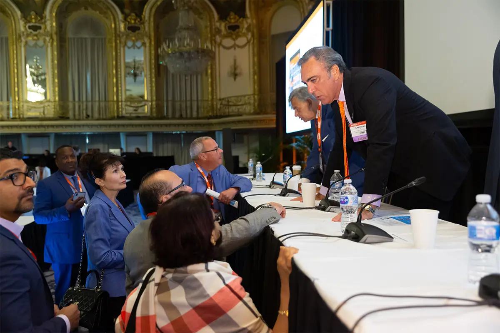

Community screening finds the problem. Advocacy writes the fix into law.
Advocacy is not separate from our clinical work, it is how that work becomes policy. You do not need a title or a law degree to move it forward.

How an idea becomes law
Every law starts as someone's problem, often a screening insurance would not cover, or a referral that never came. Here is the path from there to policy.
Identify the problem
An advocate names a real gap, often a screening insurance would not cover, and drafts a proposed solution.
Find a sponsor
A legislator agrees to sponsor the bill, and it is formally introduced.
Committee review
The bill goes to committee for review, hearings, and amendment, where testimony matters most.
Floor vote
If it advances out of committee, the bill goes to a floor vote in its chamber.
The second chamber
If passed, it moves to the other chamber and the process repeats.
It becomes law
Once passed by both chambers and signed, the idea becomes law.
Legislation to know
Four bills show how limb preservation is advancing at the state and federal level.
Illinois SB 1418
Requires all Illinois insurance carriers to cover PAD screening for at-risk individuals, anyone over 65, and younger people with risk factors like smoking, heart disease, or diabetes.
HB 7905: Diabetes Foot Health Access & Modernization Act
Would expand Medicaid coverage for podiatric services and update Medicare's diabetic shoe requirements, closing access gaps in foot and ankle care.
SB 4189: The INSULIN Act of 2026
Would cap out-of-pocket insulin at $35 per month for commercially insured Americans and fund pilot programs for uninsured access.
HB 2433: Amputation Prevention Task Force
Sponsored by Rep. Jessica Giannino, would create a public-private task force to advise on amputation prevention, coverage, and a statewide approach.
Seven ways to take action
Consistency matters more than any single action. Legislators respond to constituents they hear from more than once.
- Educate yourself on relevant legislation, in your state and nationally.
- Connect with your professional association's advocacy committee, and join.
- Call, write, and visit your legislators. Ask them to support and co-sponsor bills.
- Follow up. Call, write, and visit again.
- Consider donating to legislators' campaign funds.
- Donate to your association's PAC fund.
- Help your patients advocate for themselves.
Meet the advocates
From our June 2026 advocacy webinar.
Dr. David Alper, DPM
Retired podiatric physician with 39 years in practice, Emeritus Surgical Staff at Mt. Auburn Hospital, and an elected member of the APMA Board of Trustees who has testified before Congress.
Rep. Jessica Giannino
Lead sponsor of House Bill 2433, she convened the State House's first Amputation Prevention Roundtable, drawn to the cause by her family's own story.
Mark Molloy, Esq.
Represents healthcare clients before the Massachusetts Legislature, including the Massachusetts Foot & Ankle Society on its amputation-prevention task force bill.
Turn awareness into action.
Watch the full advocacy session, then take the first of the seven steps this week.